정보통신기사(구) (2008-03-02 기출문제)
1과목: 디지털 전자회로
1. 전압 이득이 60[dB]인 저주파 전압 증폭기가 10[%]의 왜율을 가지고 있을 때 이것을 0.1[%] 정도로 개선하는 방법은?
- 궤환율이 약 20[dB]인 부궤환을 걸어준다.
- 궤환율이 약 20[dB]인 정궤환을 걸어준다.
- 증폭도를 10[dB] 낮게 한다.
- 전압 변동율을 1/10로 낮게 한다.
(정답률: 67%)

2. 다음 중 그림과 같은 정류 회로에서 부하저항 RL의 소비전력[W]은 약 얼마인가? (단, 입력전압 120V, 부하저항 240Ω, 다이오드는 이상적이고, 권선비는 1차측 : 2차측 = 2 : 1 이다)
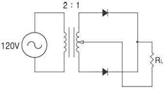
- 0.52
- 1.74
- 3.04
- 9.55
(정답률: 71%)
3. 다음 논리 회로의 출력(X)이 옳은 것은?
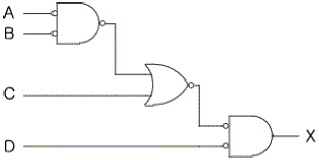
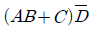
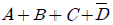
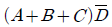
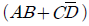
(정답률: 65%)
4. RC 결합 CE 증폭기의 저주파 응답에서 결합 콘덴서의 역할에 대한 설명으로 가장 적합한 것은?
- 결합 콘덴서의 용량은 소신호에 대해 거의 단락상태가 되도록 커야 한다.
- 결합콘덴서는 입력의 직류 성분만을 통과시켜야 한다.
- 입력 신호의 진폭이 커짐에 따라 콘덴서의 용령도 증가하여야 한다.
- 입력주파수가 작아짐에 따라 콘덴서의 용량도 감소해야 한다.
(정답률: 43%)
5. 증폭기의 입력 임피던스를 증가시키고 출력 임피던스를 감소시키기 위해서는 어떤 방법의 부궤환이 적합한가?
- 출력 전압을 샘플링해서 입력 신호와 직렬로 가한다.
- 출력 전류를 샘플링해서 입력 신호와 직렬로 가한다.
- 출력 전압을 샘플링해서 입력 신호와 병렬로 가한다.
- 출력 전류를 샘플링해서 입력 신호와 병렬로 가한다.
(정답률: 62%)
6. 다음 중 트랜지스터 접지 방식에서 전류 이득과 전압 이득이 모두 큰 것은?
- 이미터 접지
- 베이스 접지
- 컬렉터 접지
- 이미터 플로워
(정답률: 82%)
7. 다이오드 직선 검파회로에서 변조도 50[%], 진폭 10√2[V]인 AM 피변조파가 인가되었을 때 부하저항 RL에 나타나는 출력 전압의 실효치는 몇 [V]인가? (단, 검파 효율은 80[%]라고 한다)
- 10
- 8
- 6
- 4
(정답률: 59%)
8. 다음 그림의 연산 증폭기 회로에서 출력 Vo가 옳은 것은?
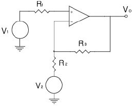
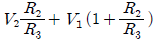
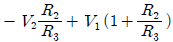
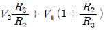
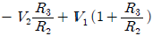
(정답률: 66%)
9. 다음 이상 발진기의 발진 주파수는 약 몇 [kHz]인가? (단, R=4[㏀], C=0.01[㎌])
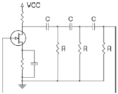
- 1.6
- 2.3
- 3.4
- 4.2
(정답률: 52%)
10. 전압 증폭회로에서 대역폭을 4배로 하려면 증폭 이득을 약몇 [dB] 감소시켜야 하는가?
- 0.25[dB]
- 4[dB]
- 6[dB]
- 12[dB]
(정답률: 44%)
11. I=Ic(1+mㆍsin ωst)xin ωct 인 피변조파의 전류가 임피던스 값이 R인 회로에 흐를 때 상측대파의 평균 전력은? (단, m은 변조도이다)
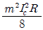
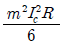
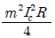
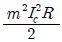
(정답률: 45%)
12. 그림과 같이 T형 플립플롭을 접속하고 첫 번째 플립플롭에 000[Hz]의 구형파를 입력하면 최종 플립플롭에서 출력단의 주파수 [Hz]는?
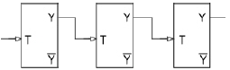
- 1000
- 500
- 250
- 125
(정답률: 76%)
13. 그림 (a)의 회로에 그림 (b)와 같은 전압이 인가될 때 정상 상태에서의 Vo는?
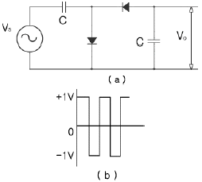
- 1[V]의 진폭을 갖는 양의 펄스
- 1[V]의 진폭을 갖는 음의 펄스
- +1[V]의 일정한 DC 전압
- -2[V]의 일정한 DC 전압
(정답률: 63%)
14. 그림과 같이 해독기에 BCD 입력이 가해지고 있다. 해독기는 BCD 입력이 1001(ABCD)인 때만 출력이 1을 나타낸다고 할 경우 다음 중 출력 Y를 불 대수식으로 표현하면?
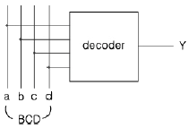
- AD
- AB
- AC
- BCD
(정답률: 81%)
15. 다음 3변수 카르노도가 나타내는 함수로 옳은 것은?
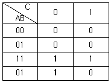
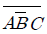
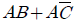
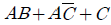
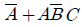
(정답률: 73%)
16. 다음 중 그림의 회로에서 입력전압 Vi와 출력전압 Vo의 전달 특성은?
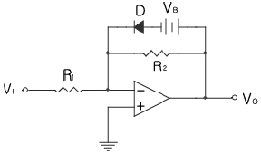
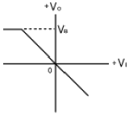
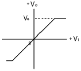
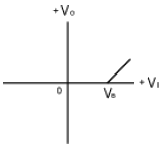
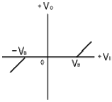
(정답률: 58%)
17. 그림과 같은 비안정 멀티바이브레이터의 설명으로 틀린 것은?
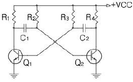
- Q1이 OFF일 때, Q2는 포화상태이다.
- Q1이 포화일 때, Q2도 포화를 유지한다.
- 구형파를 발생하는 회로이다.
- C1 및 C2의 크기에 따라 주파수가 결정된다.
(정답률: 63%)
18. MS 플립플롭의 진리표에서 Jn=1, Kn=0 에서 클럭 펄스를 인가 할 때 출력 Qn+1 의 값은?
- Qn
- 0
- 1
- 부정
(정답률: 61%)
19. NOR 게이트로 구성된 RS 플립플롭에서 이전의 상태를 유지하기 위해서는 RS가 어떤 경우일 때인가?
- RS = 01
- RS = 11
- RS = 10
- RS = 00
(정답률: 90%)
20. 다음 중 신호의 지연시간이 가장 짧은 것은?
- TTL
- ECL
- CMOS
- RTL
(정답률: 70%)
2과목: 정보통신 시스템
21. 다음 중 데이터그램 패킷교환방식에 관한 설명으로 옳지 않는 것은?
- 데이터 전송 전에 모든 경로설정이 이루어져야 한다.
- 전송 중 노드(Node)의 장애시 다른 노드의 경로 설정이 가능하다.
- 각 패킷마다 경로가 설정된다.
- 각 패킷마다 오버헤드 비트가 필요하다.
(정답률: 67%)
22. 다음 중 정보통신망의 요구 사항이 아닌 것은?
- 높은 신뢰성
- 기밀의 보안성
- 유지관리의 용이성
- 부하의 집중화
(정답률: 89%)
23. 다음 네트워크 구성 중 병목현상과 구성요소의 고정 문제에 가장 효과적으로 대응할 수 있는 방식은?
- 망(Mesh) 형
- 성(Star) 형
- 링(Ring) 형
- 버스(Bus) 형
(정답률: 79%)
24. 다음 중 기저대역(Baseband) 통신에 대한 설명으로 옳은 것은?
- 변조과정 없이 기본적인 대역만의 신호로 행하는 통신이다.
- FM 통신을 위해 반송파에 싣는 과정을 의미한다.
- 아날로그 신호의 통신을 의미한다.
- TDM 방식을 의미한다.
(정답률: 88%)
25. 공통선 신호(No.7) 방식의 특징으로 적합하지 않은 것은?
- 다양한 서비스 제공 능력을 갖고 있어 새로운 서비스 도입에 융통성이 크다.
- 기능별로 모듈화된 계층 구조로 이기종 시스템간의 상호접속이 용이하다.
- 한 그룹의 트렁크에 관한 정보를 동일채널로 전송한다.
- 시분할 디지털 교환기에 사용한다.
(정답률: 67%)
26. CDMA(Code Division Multiple Access)의 일반적인 특성으로 볼 수 없는 것은?
- TDMA보다 비교적 시스템이 복잡하다.
- 수용 용량의 증가가 어렵다.
- self-jamming 문제가 있다.
- 원근 문제를 해결하기 위해 정확한 전력 제어가 필요하다.
(정답률: 61%)
27. 다음 중 ATM 교환기의 요구사항이 아닌 것은?
- 고속 교환 능력이 있을 것
- 지연시간이 짧고 셀의 손실이 적을 것
- 다양한 서비스 처리능력이 있을 것
- 사용자 고유 프로토콜을 채택하여야 할 것
(정답률: 67%)
28. 파장분할 다중전송시스템이 갖는 특성이 아닌 것은?
- 대용량화가 가능하다.
- 양방향 전송이 가능하다.
- 다른 신호의 동시 전송이 가능하다.
- 전자기적인 누화가 통화품질에 영향을 줄 수 있다.
(정답률: 81%)
29. 광대역 ISDN 서비스 제공에 사용되는 교환 방식은?
- ATM 교환방식
- 메시지 교환방식
- 회선 교환방식
- 패킷 교환방식
(정답률: 60%)
30. 광송신기의 출력이 -3[dBm], 광수신기의 수신감도가 -36[dBm], 광섬유의 손실이 1[dB/km]이다. 만약 접속 손실과 광커넥터 손실을 무시한다면, 이러한 광전송 시스템이 무중계로 전송 가능한 최대 거리[km]는?
- 33
- 66
- 99
- 132
(정답률: 85%)
31. 패킷 교환망에 들어오는 데이터량을 적절히 조절하여 폭주되지 않도록 처리하는 기능은?
- flow control
- routing
- node delay
- closed connection
(정답률: 96%)
32. 다음 중 디지털 전용회선의 양쪽 종단 부분에서 DTE 와 접속되는 장치는?
- DSU
- CCU
- FEP
- PAD
(정답률: 87%)
33. 정보통신 시스템이 갖추어야 할 일반적인 기능에 대한 설명으로 틀린 것은?
- 통신회선의 효율적 이용
- 정보처리기기와 통신망의 용이한 접속
- 아날로그 신호에서 의미 단위의 시작과 끝의 감지능력
- 통신 기능에서 발생하는 에러 검출 및 정정
(정답률: 70%)
34. 다음 중 TCP/IP 프로토콜에서 통신망 이용자 간에 전자우편을 위한 프로토콜은?
- FTP
- VT
- SMTP
- SNMP
(정답률: 90%)
35. 다음 중 OSI 7계층에서 종점간(End To End)에 신뢰성 있고 투명한 데이터 전송을 제공하는 계층은?
- 트랜스포트 계층
- 네트워크 계층
- 세션 계층
- 응용 계층
(정답률: 82%)
36. 다음 중 패스트 이더넷(fast ethernet)의 표준형태가 아닌것은?
- 100 Base-DX
- 100 Base-TX
- 100 Base-FX
- 100 Base-T4
(정답률: 54%)
37. 다음 중 패킷교환 공중데이터 네트워크 상호간의 접속을 위한 신호방식을 규정하고 있는 프로토콜은?
- X.75
- X.25
- X.70
- X.96
(정답률: 59%)
38. 100개의 전화국간을 망형으로 연결할 때 최소로 필요한 회선수는?
- 1950
- 2950
- 4950
- 6950
(정답률: 86%)
39. 디지털 이동통신 시스템에서 BS(Base Station)의 설명으로 옳은 것은?
- 이동국과 이동통신 교환국 중간에 위치하여 이동국과의 무선 전송을 담당한다.
- 이동국이 이동통신 교환기에 등록된 이동국인지를 확인하는 데이터베이스이다.
- 디지털 셀룰러 이동통신 교환기이다.
- 무선가입자 단말기로서 기지국과 무선채널을 통하여 통신을 하는 것이다.
(정답률: 63%)
40. MTBF가 72시간, MTTR이 1시간이 걸린 시스템이 있다고 할때 가동율은 약 몇 [%]인가?
- 92.4
- 96.2
- 98.6
- 99.8
(정답률: 75%)
3과목: 정보통신 기기
41. 변ㆍ복조기에 사용되는 PSK 방식에 해당되지 않는 것은?
- 2진 PSK
- 4진 PSK
- 8진 PSK
- 20진 PSK
(정답률: 74%)
42. 은행, 백화점, 댐, 하역장, 공장 및 사람이 접근할 수 없는 산업현장 등을 감시하는데 가장 적합한 것은?
- CATV
- VRS
- HDTV
- CCTV
(정답률: 91%)
43. 다음 중 지능다중화기(Intelligent Multiplexer)에 대한 설명으로 틀린 것은?
- 비동기식 다중화기이다.
- 통계적 다중화기(Statistical Time Division Multiplexer)라고도 한다.
- 전송량에 관계없이 전송지연이 없으며, 접속에 소요되는 시간이 단축된다.
- 주소제어, 흐름제어 및 오류제어 등의 기능이 가능하다.
(정답률: 60%)
44. 다음 중 CATV의 기본구성에 속하지 않는 것은?
- 헤드엔드
- 교환 장치
- 가입자설비
- 중계전송망
(정답률: 65%)
45. 위성통신에서 지구국을 구성하는 부분이 아닌 것은?
- 지상통제부
- 안테나부
- 중계부(Transponder)
- 증폭부
(정답률: 59%)
46. 아날로그 지상파 TV에서 NTSC 방식의 주사선수는?
- 4⑤개
- 525개
- 625개
- 819개
(정답률: 63%)
47. 다음 중 위성통신에서 대역확산 통신방식을 이용하여 필요로 하는 대역보다 넓은 대역으로 신호를 변조하여 여러 신호를 동시에 통신할 수 있는 방식은?
- 주파수분할 다원접속
- 시분할 다원접속
- 코드분할 다원접속
- 다중분할 다원접속
(정답률: 62%)
48. 광통신시스템에서 광합파기 및 광분배기를 사용하는 광다중 전송방식은?
- TDM
- WDM
- ADM
- FDM
(정답률: 90%)
49. 다음 중 ATM 헤더의 구성 요소가 아닌 것은?
- GFC(Generic Flow Control)
- VPI(Virtual Path Identifier)
- CCP(Call Control Priority)
- CLP(Cell Loss Priority)
(정답률: 59%)
50. 다음 통신제어장치(CCU)의 설명으로 가장 적합한 것은?
- 컴퓨터와 데이터 전송회선의 결합
- 입력장치와 데이터 전송회선의 결합
- 전송신호의 상호 변환
- 복수의 단말기 제어
(정답률: 61%)
51. 프리엠퍼시스 회로에 대한 설명으로 가장 적합한 것은?
- FM 송신기에서 변조신호의 높은 주파수를 강조하는 것이다.
- FM에서 복조한 후 음성 등의 높은 주파수를 강조하는 것이다.
- FM 송신기에서 최대 주파수 편이가 규정치를 넘지않도록 하는 회로다.
- FM에서 주파수 편이를 항상 일정하게 유지시켜 주는 회로 이다.
(정답률: 54%)
52. 다음 중 전자상거래(EDI)의 특징으로 적합하지 않은 것은?
- 데이터 표현 : 자유 서식
- 데이터 형식 : 전기 신호
- 데이터 전송 : 전자적 정보 전송
- 데이터 처리 : 송ㆍ수신간의 데이터 자동입력 및 처리
(정답률: 66%)
53. RS-232C 25핀 표준 인터페이스에서 수신(RD)에 해당되는 핀은?
- 1번
- 2번
- 3번
- 4번
(정답률: 63%)
54. G4 팩시밀리의 일반적인 특징에 해당하지 않는 것은?
- 고속의 전송이 가능하다.
- 해상도가 높으며 정밀도가 높다.
- 오류제어에 따른 고품질성을 갖는다.
- PSTN에 적합한 형태이다.
(정답률: 67%)
55. 송신측이 한 개의 블록을 전송한 다음 수신측에서 에러의 발생을 점검한 후 ACK나 NAK를 보내올 때까지 기다리는 방식은?
- 연속적 ARQ
- 적응적 ARQ
- 전진에러수정
- 정지-대기 ARQ
(정답률: 87%)
56. 주파수 변조파를 수신하는데 무신호시 잡음을 제어하는 것은?
- IDC
- AFC
- SQUELCH
- AGC
(정답률: 75%)
57. 음성파형을 분석하여 유ㆍ무성음의 구별, 주기, 성도의 형태 등 음성의 특징을 추출하여 전송하고 수신측에서는 전송된 정보를 가지고 음성을 합성해내는 방식은?
- 파형부호화 방식
- 보코딩 방식
- 혼합부호화 방식
- 원천부호화 방식
(정답률: 77%)
58. 다음 중 전화망의 통화품질에 해당하는 것은?
- 통화당량
- 명료도 등가감쇠량
- 실효전송당량
- 수화음량
(정답률: 45%)
59. 다음 중 메시지 통신시스템(MHS)의 구성요소에 해당하지않는 것은?
- User Agent
- Message Transfer Agent
- Message Store
- Codec
(정답률: 86%)
60. 광전송시스템의 각종 부품 및 경계면에서 반사되어 전송 신호와 간섭을 유발하여 전체 성능을 저하시키는 역반사 잡음을 제거하기 위한 소자는?
- 광감쇠기
- 광서큘레이터
- 광커플러
- 광아이솔레이터
(정답률: 86%)
4과목: 정보전송 공학
61. 맨체스터 부호화에 대한 설명 중 적합하지 않은 것은?
- 상대적으로 대역폭이 넓다.
- 데이터 전송시 동기화에 불리하다.
- 각 비트의 중간에서 천이가 발생한다.
- 저(음)전압에서 고(양)전압으로의 천이는 신호 “1”이다.
(정답률: 60%)
62. 전체 25비트를 사용하는 해밍코드에서 해밍비트의 수는?
- 3
- 4
- 5
- 6
(정답률: 80%)
63. 다음 중 HDLC에서 가장 많이 사용되는 오류검출기술은?
- 패리티 검사
- 순환중복 검사
- 전진오류정정(FEC)
- 수평 패리티 검사
(정답률: 55%)
64. 링크를 가장 효율적으로 사용할 수 있으나 프레임 재순서화 기능이 요구되는 등 시스템 구현이 복잡한 단점을 가지고 있는 방식은?
- Simple ARQ
- Go Back N ARQ
- Stop and Wait ARQ
- Selective Repeat ARQ
(정답률: 78%)
65. 정합필터에 대한 설명 중 적합하지 않은 것은?
- 디지털 통신에서 사용된다.
- 비동기 검파기로 동작한다.
- 정합필터의 출력은 입력신호의 에너지와 같다.
- 펄스의 존재 유무를 판별하는 시점에서 신호 성분을 증가시키고 잡음성분을 감소시키는 역할을 수행한다.
(정답률: 55%)
66. 앨리어싱(aliasing)에 대한 설명으로 가장 적합한 것은?
- 아날로그 신호를 디지털화 하는 과정에서 발생하는 오차
- 유한한 신호를 취급하는데 있어서 표본화 값이 무한한 시간에 걸쳐 발생하므로 생기는 오차
- 연속적인 아날로그 신호를 PAM 신호로 바꾸는 과정에서 발생하는 현상
- 나이퀴스트 표본화 조건을 만족하지 않게 표본화 함으로써 주파수 영역에서 스펙트럼이 겹쳐지게 되는 현상
(정답률: 81%)
67. 병렬전송과 비교하여 직렬전송의 특징으로 적합하지 않은 것은?
- 전송 속도가 빠르다.
- 전송로의 비용이 저렴하다.
- 직ㆍ병렬 변환 회로가 필요하다.
- 데이터 전송 시스템에 주로 사용된다.
(정답률: 79%)
68. HDLC 프로토콜에서 플래그의 사용 목적으로 가장 적합한 것은?
- 주소를 나타내기 위해
- 링크를 초기 설정하기 위해
- 프레임의 동기를 맞추기 위해
- 데이터전송 동작모드를 결정하기 위해
(정답률: 72%)
69. 다음 중 QAM 변조방식에 대한 설명으로 가장 적합한 것은?
- 입력신호에 따라 반송파의 진폭을 변화시키는 방식
- 입력신호에 따라 반송파의 최소 주파수를 변화시키는 방식
- 진폭 신호에 따라 적은 전력으로 다량의 정보를 전송시키는 방식
- 반송파의 진폭과 위상을 데이터에 따라 변화시키는 진폭변조와 위상변조 방식의 혼합
(정답률: 76%)
70. 다음 중 디지털 데이터를 아날로그 신호로 변조하는 방식이 아닌 것은?
- ASK
- QAM
- PCM
- DPSK
(정답률: 63%)
71. PCM-32 방식의 전송속도 및 음성 채널 수로 맞는 것은?
- 1.544 Mbps 및 30 채널
- 2.048 Mbps 및 32 채널
- 2.048 Mbps 및 30 채널
- 1.544 Mbps 및 24 채널
(정답률: 66%)
72. HDLC가 사용하는 세 가지의 동작 모드에 해당하지 않는 것은?
- 절단모드(DCM)
- 정규 응답모드(NRM)
- 비동기 응답모드(ARM)
- 비동기 균형모드(ABM)
(정답률: 78%)
73. 광섬유 케이블의 산란 손실에 대한 설명으로 가장 적합한 것은?
- 코아나 클래드의 경계면에 발생한 요철에 의한 손실이다.
- 광섬유의 흡수 현상으로 광 전력의 일부가 열로 유실되는 손실이다.
- 광섬유 재료의 밀도, 성분, 분자가 불균일하여 굴절율이 변화되어 일어나는 손실이다.
- 두 개의 광섬유를 접속시킬 때 중심축이 서로 어긋나거나 기울어져 일어나는 손실이다.
(정답률: 68%)
74. 수신한 마이크로파를 중간 주파수로 변환하지 않고 그대로 증폭하여 송신하는 중계방식은?
- 검파 중계방식
- 직접 중계방식
- 무급전 중계방식
- 헤테로다인 중계방식
(정답률: 68%)
75. 전송로에 9600[kbps]의 데이터를 전송하는 경우 비트 오율이 5 × 10-7 이라면 매 초 몇 개의 에러 비트가 발생하는가?
- 2.4
- 4.8
- 9.6
- 12.0
(정답률: 84%)
76. 다음 중 통신로의 전송(채널) 용량과 관계 없는 것은?
- 신호의 전력
- 잡음의 전력
- 신호의 진폭
- 채널의 대역폭
(정답률: 59%)
77. 다음 중 위성지구국의 기본적인 구성이 아닌 것은?
- 안테나계
- 송수신계
- 자세제어계
- 인터페이스계
(정답률: 78%)
78. 다음 중 OSI 참조 모델에서 표현 계층의 기능에 속하는 것은?
- 순서 제어
- 중계 기능
- 암호화 기능
- 통신 경로 선택
(정답률: 75%)
79. 메시지 10001101(P(X)=X7+X3+X2 +1)에 대해 생성 다항식 G(X)=X5+X4 +X+1을 이용하여 CRC 부호화할 경우 패리티 비트의 형태는?
- 11111
- 11011
- 10101
- 01001
(정답률: 44%)
80. 광섬유의 분산에 관한 설명 중 적합하지 않은 것은?
- 분산에는 색분산과 모드분산이 있다.
- 색분산은 재료분산과 구조분산이 있다.
- 다중모드 광케이블에는 색분산과 모드분산이 존재한다.
- 재료분산은 파장의 폭을 갖는 광펄스 입사시 빛의 전파경로 길이가 파장에 따라 달라져 발생한다.
(정답률: 60%)
5과목: 전자계산기일반 및 정보통신설비기준
81. 입ㆍ출력 과정에서 CPU의 역할이 가장 큰 방식은?
- Programmed I/O
- Interrupt-Driver I/O
- DMA
- Channel I/O
(정답률: 64%)
82. 데이터의 고속 처리를 목적으로 주기억장치와 입ㆍ출력장치 사이에 있는 입ㆍ출력 전용장치는?
- 버퍼
- 채널
- 캐시
- 포트
(정답률: 49%)
83. 4개의 비트(bit)에서 MSB로부터 차례로 8, 4, 2, 1의 가중치(weight)를 갖는 코드는?
- BCD 코드
- Access 3 코드
- ASCII 코드
- Hamming 코드
(정답률: 65%)
84. 다음과 같은 진리표를 갖는 회로는?
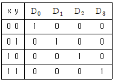
- 비교기(Comparator)
- 멀티플렉서(Multiplexer)
- 디코더(Decoder)
- 인코더(Incoder)
(정답률: 80%)
85. 병렬 프로세서의 한 종류로 벡터 프로세서에서 많이 사용되는 방식으로 비디오 게임 콘솔이나 그래픽 카드와 같은 분야에 자주 적용되며 MMX에도 사용된 구조는?
- SIMD
- SISD
- MISD
- MIMD
(정답률: 56%)
86. 연산의 속도를 빠르게 하기 위하여 부동 소수점 연산을 전문적으로 수행하는 장치는?
- co-processor
- RAM
- ROM
- USB
(정답률: 69%)
87. 기계어를 기호(symbolic code)로 1 대 1 대응시켜 만든 언어는?
- 어셈블리어
- 고급언어
- 컴파일러
- 언어 프로세서
(정답률: 80%)
88. 마이크로 오퍼레이션 중 가장 긴 것의 시간을 해당 마이크로 사이클 타임으로 정의하는 방식을 무엇이라 하는가?
- Fetch Status
- 동기 고정식
- 동기 가변식
- Interrupt Status
(정답률: 56%)
89. 10진수 9를 2진수로 표현할 때, 기수 패리티 코드화한 값으로 옳은 것은?
- 10010
- 10001
- 10011
- 01001
(정답률: 52%)
90. 그레이 코드 10110110을 2진수로 바꾼 것으로 맞는 것은?
- 11011011
- 10101101
- 01001100
- 01101011
(정답률: 69%)
91. 전기통신의 원활한 발전과 정보사회의 촉진을 위한 전기통신기본계획은 누가 수립하여 공고하는가?
- 과학기술부장관
- 정보통신부장관
- KT(한국통신)사장
- 통신위원회위원장
(정답률: 67%)
92. 다음 중 전기통신의 표준화에 관한 업무를 효율적으로 추진하기 위하여 설립한 것은?
- 한국정보통신협회
- 한국정보사회진흥원
- 한국정보통신기술협회
- 한국정보통신공사협회
(정답률: 62%)
93. 선로설비의 회선 상호간, 회선과 대지간 및 회선의 심선 상호간의 절연저항은 직류 500 볼트 절연저항계로 측정하여 몇 메가옴 이상이어야 하는가?
- 1메가옴
- 2메가옴
- 5메가옴
- 10메가옴
(정답률: 74%)
94. “모든 이용자가 언제 어디서나 적정한 요금으로 제공받을 수 있는 기본적인 통신역무”로 정의되는 것은?
- 보편적 업무
- 전기통신역무
- 기간통신역무
- 별정통신역무
(정답률: 94%)
95. 다음 ( ) 안에 들어갈 내용으로 가장 적합한 것은?
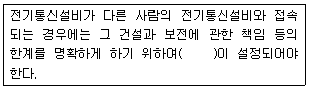
- 접속점
- 인입점
- 연결점
- 분계점
(정답률: 74%)
96. 다음 중 시ㆍ도지사가 정보통신공사업의 등록을 반드시 취소하여야 하는 것은?
- 규정에 위반하여 하도급한 때
- 시정명령 또는 지시에 위반한 때
- 최근 5년간 3회 이상 영업정지처분을 받은 때
- 정보통신기술자를 공사현장에 배치하지 아니한 때
(정답률: 74%)
97. 다음 중 정보통신공사업의 등록 결격사유가 아닌 것은?
- 금치산자 또는 한정치산자
- 파산선고를 받고 복권되지 아니한 자
- 정보통신공사업법 규정에 의하여 등록이 취소된 후 2년이 경과한 자
- 정보통신공사업법 규정에 위반하여 벌금형의 선고를 받고 2년을 경과하지 아니한 자
(정답률: 52%)
98. 단말장치의 전자파장해 방지기준 및 전자파장해로부터의 보호기준 등은 어느 법령이 정하는 바에 의하는가?
- 전파에 관한 법령
- 정보통신에 관한 법령
- 전기통신에 관한 법령
- 정보통신공사업에 관한 법령
(정답률: 60%)
99. 전기통신사업의 구분으로 가장 적합한 것은?
- 기간통신사업, 일반통신사업, 특정통신사업
- 일반통신사업, 특정통신사업, 별정통신사업
- 기간통신사업, 정보통신사업, 별정통신사업
- 기간통신사업, 별정통신사업, 부가통신사업
(정답률: 79%)
100. “다른 사람의 위탁을 받아 공사에 관한 조사ㆍ설계ㆍ감리ㆍ사업관리 및 유지관리 등의 역무를 수행하는 것”으로 정의되는 것은?
- 도급
- 하도급
- 용역
- 용역업
(정답률: 60%)